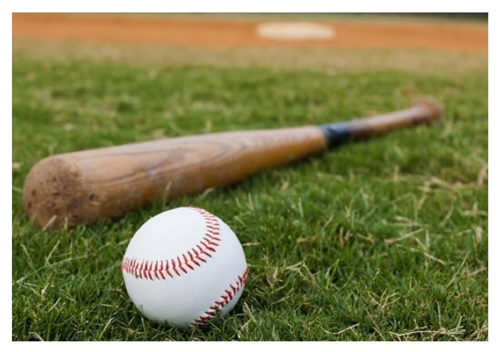

- 야구
- 영화
- 한약
- 역사
야구의 관한 내 맘대로 생각 적기
야구는(물론 다른 스포츠도 마찬가지지만) 여러가지 요소가 정말 무궁무진한 스포츠 입니다.

기본적으로 숙지하고 있어야하는 규칙도 너무나 많고, 규칙을 모두 이해했다고 해도, 그것을 실전에 활용하고 경기를 정상적으로 진행하는데에는 굉장히 많은
시간이 소요됩니다. 여기서 경기를 정상적으로 진행한다는 것은, 진입장벽이 높다는 뜻입니다. 알아야 할 것들이 굉장히 많죠. 손을 쓰지 않아도 된다는 규칙만 지키면 어느 정도 진행이 되는
축구와는 전혀 다릅니다. 축구를 비하하는 것은 절대 아닙니다. 축구는 시작은 너무나 단순하지만 제대로 된 축구를 하기 위해서는 야구만큼 또는 그보다 더 많은 준비가 필요합니다.
그런데, 야구는 다릅니다. 시작부터 산적한 문제가 많습니다. 글러브와 공, 배트만 있다고 시작이 되는 것이 아니니까요. 그래서 저는 야구 전문가는 아니지만, 그저 야구를 오래 보고 사회인 야구를
몇 년간 해온 경험을 바탕으로 야구라는 스포츠에 대해서 제목에서 언급했듯, 제 마음대로 적어보려고 합니다.
우선 야구는(누구나 다 알겠지만) 공을 던지면 그것을 쳐서 1~3루를 지나 홈으로 들어와서 득점을 해서 더 많은 득점을 하는 경기 입니다.
그렇다면, 경기에 흐름으로 따라가 보도록 하지요. 심판이 플레이볼을 선언하면 공을 가진 투수라는 포지션의 인물이 공을 던지는 것이 가장 먼저 입니다.
투수가 공을 던지지 않는다면(물론 정해진 시간안에 던져야 하므로, 그 시간안에 무조건 던지긴 하지만)야구 경기는 전혀 진행이 되지 않습니다.
그러므로, 저는 경기의 시작인 투수에 대해서 먼저 이야기 하고자 합니다.